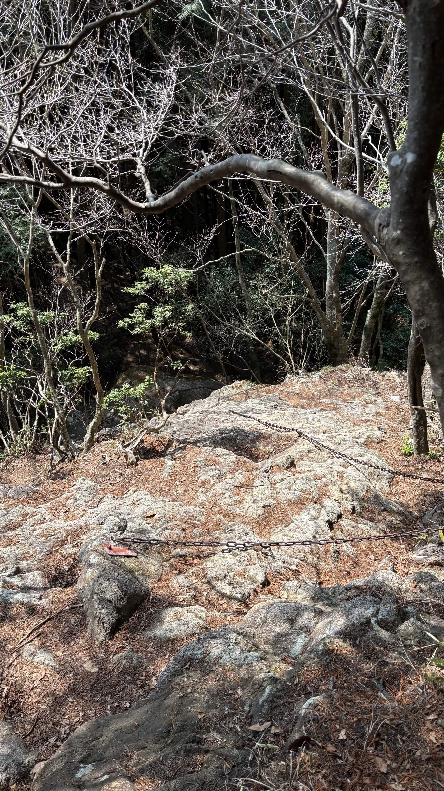
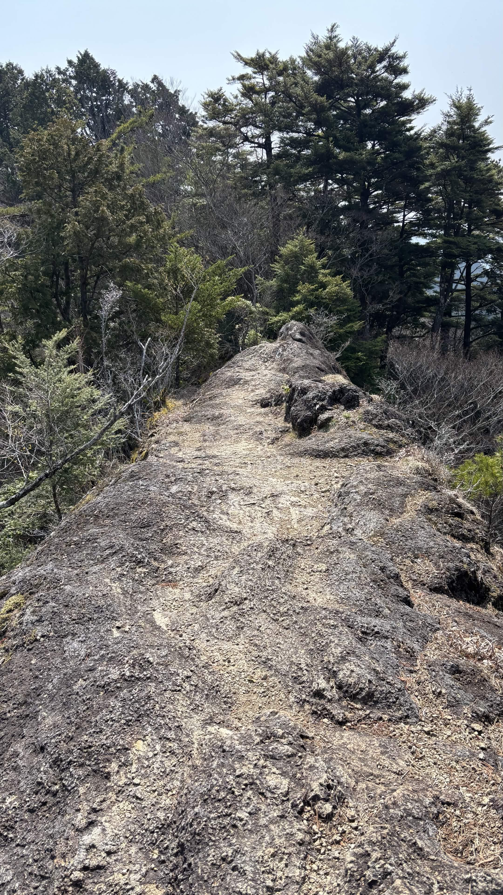
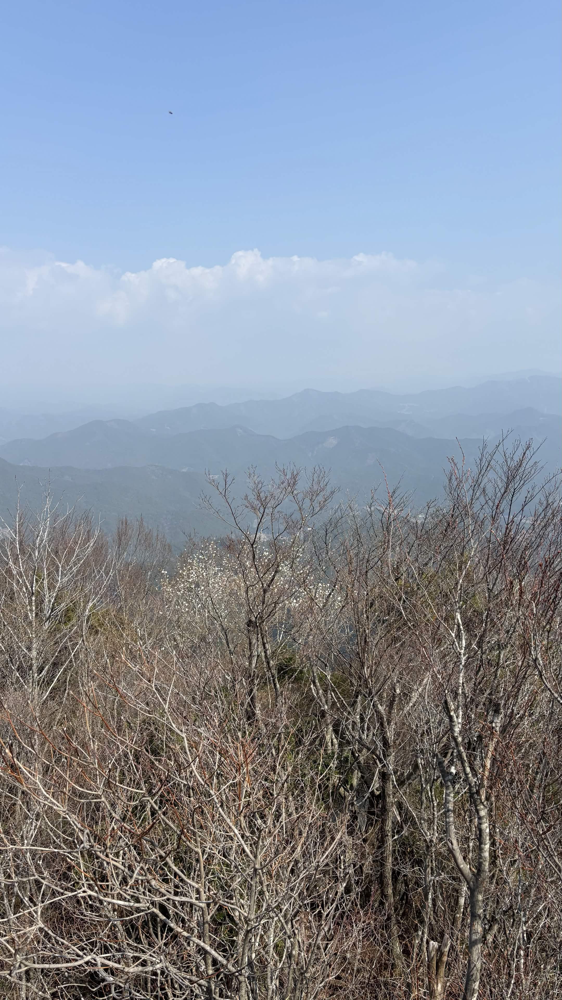

| 日程 | 2026年3月29日（登頂） |
|---|---|
| メンバー | ソロ（なし） |
| 難易度（俺流10段階） | 技術力 3 / 体力度 4 |
| アクセスコース目安 |
・三河川合駅 → 小滝橋駐車場：約20分 ・小滝橋駐車場 → 乳岩峡登山口：約20分 ・乳岩峡登山口 → 鬼岩：約1時間 ・鬼岩 → 胸突八丁ノ頭：約30分 ・胸突八丁ノ頭 → 明神山：約1時間 |

愛知県で本格的な登山練習ができる山として知られる三ツ瀬明神山（三河明神山）へ挑戦してきました。

体力面・技術面ともに実戦的なトレーニングができる非常に充実した山行となりました。今回得た感覚や体の使い方を、今後の高山やアルプス登山へしっかりと繋げていきたいです！
← HOMEへ戻る